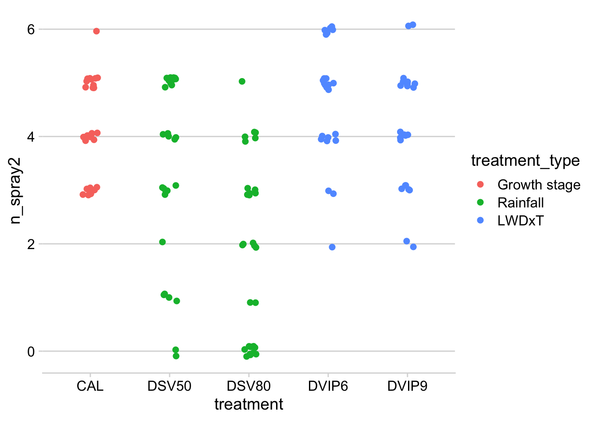

% Code
# Set the default theme for the ggplot2 plots
library(tidyverse)
library(cowplot)
theme_set(theme_minimal_hgrid())
library(ggthemes)
library(ggsci)Read data
The data were organized in a Google sheet file which can be read directly using the gsheet package. See below the code that can be used to load the data from the cloud. I created a csv file for the data and either could be used.
#library(gsheet)
#dataws <- gsheet::gsheet2tbl( "https://docs.google.com/spreadsheets/d/1P3wzN-nQiSKBjfN9u_MADAAtTpBeyAObzhwVybD5b3w/edit#gid=931758392"
#write_csv(dataws, "data/dataws.csv")
dataws <- read_csv("data/dataws.csv")Exploratory analysis
Experiments and treatments
Let’s explore the data of the epidemic variables and yield in all experiments. We need the tidyverse package (loads a collection of several packages) to facilitate our analysis.
Number of experiments:
max(dataws$trial_number)## [1] 29Number of experiments by treatment and source:
table(dataws$treatment, dataws$source)/4##
## Beruski DWSys
## CAL 24 5
## DSV50 24 5
## DSV80 24 5
## DVIP6 24 0
## DVIP9 24 0
## UNT 24 5Number and percent of planting dates per month across all experiments.
library(janitor)
dataws %>%
tabyl(planting_month) %>%
arrange(-n) Number of trials with soybean rust severity.
dataws %>%
filter(sev > 0) %>%
tabyl(trial_number) %>%
nrow()## [1] 21Number of trials with AUDPC.
dataws %>%
filter(audpc > 0) %>%
tabyl(trial_number) %>%
nrow()## [1] 16Number of trials where yield was obtained.
dataws %>%
filter(yld > 0) %>%
tabyl(trial_number) %>%
nrow()## [1] 28Disease pressure
We will filter the untreated check plots and inspect the variation in the mean and standard deviation of disease severity for each trial. This provides an overview of the “disease pressure”.
p1_sev_trials <- dataws %>%
filter(treatment == "UNT") %>%
filter(sev > 0) %>%
unite("treatment2", c("trial_number", "trial_code"), remove = F) %>%
group_by(trial_number, treatment2, harvest_season, trial_code) %>%
summarize(mean_sev = mean(sev),
sd_sev = sd(sev)) %>%
ggplot(aes(reorder(treatment2, harvest_season), mean_sev,
shape = factor(harvest_season))) +
geom_point(size = 2) +
geom_errorbar(aes(ymin = mean_sev - sd_sev,
ymax = mean_sev + sd_sev),
width = 0.1) +
theme(legend.position = "none",
axis.text.x=element_blank()) +
labs(
y = "UNT severity (%)",
x = "Trial",
shape = "Location", color = "Harvest season"
)+
ylim(0,106)+
facet_wrap(~trial_code, scales = "free_x", ncol=4)
p1_sev_trials
Baseline yield
We do the same for what we call baseline yield, which is the actual yields for the situations where no fungicide was applied (yield in the check treatment).
p1_yield_trials <- dataws %>%
filter(treatment == "UNT") %>%
filter(yld > 0) %>%
unite("treatment2", c("trial_number", "trial_code"), remove = F) %>%
group_by(trial_number, treatment2, harvest_season, trial_code) %>%
summarize(mean_yld = mean(yld), sd_yld = sd(yld)) %>%
ggplot(aes(reorder(treatment2, harvest_season), mean_yld,
shape = factor(harvest_season))) +
geom_point(size = 2) +
geom_errorbar(aes(ymin = mean_yld - sd_yld, ymax = mean_yld + sd_yld),
width = 0.1) +
theme(legend.position = "top", axis.text.x=element_blank()) +
labs(
y = "UNT Yield (kg/ha)",
x = "Trial",
shape = "Harvest season"
)+
ylim(0, 7000)+
scale_color_tableau()+
facet_wrap(~trial_code, scales = "free_x", ncol = 6)
p1_yield_trials
Treatments
Let’s recode the names of the treatments and assign them to three criteria: calendar or growth stage, rainfall and leaf wetness x temperature models. This category will be used to enhance visualization.
dataws$treatment <- factor(dataws$treatment,
levels = c(
"UNT",
"CAL",
"DSV50",
"DSV80",
"DVIP6",
"DVIP9"
)
)
dataws$treatment_type <- factor(dataws$treatment_type,
levels = c(
"None",
"Growth stage",
"Rainfall",
"LWDxT"
)
)Overall severity
Here we will produce a boxplot to depict the variation in severity for each of the treatments. It will provide an overview of the performance of the systems, irrespectively of the number of sprays.
p1_sev <- dataws %>%
filter(sev > 0) %>%
ggplot(aes(treatment, sev, fill = treatment_type)) +
geom_boxplot(alpha = 1, outlier.colour = NA) +
geom_jitter(width = 0.1, shape = 1, color = "grey30", alpha = 0.5)+
theme(legend.position = "none")+
geom_jitter(width = 0.1, size = 1, color = "grey70", shape = 16, alpha = 0.5)+ theme(legend.position = "none")+
scale_fill_futurama() +
ylim(0, 106)+
labs(x = "Treatment", y = "SBR Severity (%)", fill = "System")Overall yield
We do the same for yield to compare the treatments with regards yied response.
p1_yield <- dataws %>%
filter(yld > 0) %>%
ggplot(aes(treatment, yld, fill = treatment_type)) +
geom_boxplot(alpha = 1, outlier.colour = NA) +
geom_jitter(width = 0.1, size = 1, color = "grey70", shape = 16, alpha = 0.5)+ theme(legend.position = "none")+
theme(legend.position = "none")+
ylim(0, 7000)+
scale_fill_futurama() +
labs(x = "Treatment", y = "Soybean yield (kg/ha)", fill = "System")Figure 1
Distribution of severity and yield across treatments.
library(cowplot)
legend_b <- get_legend(
p1_sev +
guides(color = guide_legend(nrow = 1)) +
theme(legend.position = "bottom")
)
prow <- plot_grid( p1_sev,p1_yield, ncol = 1, align = "h", axis = "bt", labels = LETTERS )
plot_grid(prow, legend_b, ncol = 1, rel_heights = c(1, .1))
ggsave("figs/figure1.png", dpi = 300, width =5, height =9)Number of sprays
Let’s obtain the mean and median number of sprays per treatment.
dataws %>%
filter(treatment != "UNT") %>%
group_by( treatment_type, treatment) %>%
summarize(n_spray2 = median(n_spray),
n_spray3 = mean(n_spray)) Another way is to use a jitter plot .
dataws %>%
filter(treatment != "UNT") %>%
group_by(trial_number, treatment_type, treatment, sev_class) %>%
summarize(n_spray2 = mean(n_spray)) %>%
ggplot(aes(treatment, n_spray2, color = treatment_type)) +
theme_minimal_hgrid()+
geom_jitter(width = 0.1, height = 0.1, size = 2)
mean_sprays <- dataws %>%filter(treatment != "UNT") %>% group_by(treatment) %>% summarize(mean_sprays = (mean(n_spray, na.rm = TRUE)))
mean_spraysp_sprays3 <- dataws %>%
filter(treatment != "UNT") %>%
ggplot(aes(x = n_spray, fill = treatment_type)) +
theme_minimal_hgrid()+
geom_bar()+
geom_vline(data = mean_sprays, aes(xintercept = mean_sprays), size =1, linetype =2, color = "grey50")+
labs(x = "Number of sprays", y = "Frequency")+
scale_x_continuous(breaks = c(0,1,2,3,4,5,6))+
scale_fill_manual(values = c("#c71000ff", "#008ea0ff", "#8a4198ff"))+
theme(legend.position = "none")+
facet_wrap(~treatment, ncol = 1)Days to first spray
mean_first <- dataws %>%filter(treatment != "UNT") %>% group_by(treatment) %>% summarize(mean_first = (mean(first_after_planting, na.rm = TRUE)))
p_sprays2 <- dataws %>%
filter(treatment != "UNT") %>%
ggplot(aes(x = first_after_planting, fill = treatment_type)) +
theme_minimal_hgrid()+
scale_fill_manual(values = c("#c71000ff", "#008ea0ff", "#8a4198ff"))+
labs(y = "Frequency", x = "Days to first spray")+
geom_histogram(bins = 10, color = "white")+
scale_x_continuous(breaks = seq(0,80, 10))+
geom_vline(data = mean_first, aes(xintercept = mean_first), size =1, linetype =2, color = "grey50")+
theme(legend.position = "none")+
facet_wrap(~treatment, ncol = 1)Intervals between sprays
p_sprays1 <- dataws %>%
filter(treatment != "UNT") %>%
select(treatment_type, treatment, 25:29) %>%
gather(position, value, 3:7) %>%
filter(value != "NA") %>%
ggplot(aes(position, value, fill = treatment_type))+
geom_boxplot(outlier.shape = 1, alpha = 0.7, aes(color = treatment_type))+
labs(y = "Number of days", x = "Spray interval")+
scale_color_manual(values = c("#c71000ff", "#008ea0ff", "#8a4198ff"))+
scale_fill_manual(values = c("#c71000ff", "#008ea0ff", "#8a4198ff"))+
theme(legend.position = "none")+
facet_wrap(~treatment, ncol = 1)Figure 2
plot_grid(p_sprays3,p_sprays2,p_sprays1, ncol = 3, align = "hv", labels = LETTERS )ggsave("figs/figure2.png", width = 9, height =8)Now let’s calculate the mean and standard deviation of the number of sprays.
theme_set(theme_minimal_hgrid())
mean_sprays <- dataws %>%
filter(treatment != "UNT") %>%
group_by(trial_number, treatment_type, treatment, sev_class) %>%
summarize(n_spray2 = mean(n_spray)) %>%
group_by(treatment, treatment_type) %>%
summarize(
mean_spray2 = mean(n_spray2),
sd_spray2 = sd(n_spray2),
min_spray2 = min(n_spray2),
max_spray2 = max(n_spray2)
)
mean_sprays %>%
ggplot(aes(treatment, mean_spray2, color = treatment_type)) +
geom_point(size = 3) +
geom_errorbar(aes(ymin = mean_spray2 - sd_spray2, ymax = mean_spray2 + sd_spray2), width = 0.1, size = 1)+
labs(x = "System",
y = "Mean number of sprays",
color = "System type")Fungicide efficiency
The fungicide use efficiency is an index which takes into account the effect of the fungicide (usually reduction in disease compared to the nontreated check), as well as the number of sprays. In other words, if more sprays are needed for fungicide treatment A to reduce disease to the same level as fungicide treatment B, the less efficient is the fungicide treatment A.
Before we proceed with further analysis, let’s create columns with each of the values of severity and audpc in the check treatment of the trials, which will be needed for our analysis of efficiency for each of these two variables.
library(tidyr)
sev_check <- dataws %>%
filter(treatment == "UNT") %>%
dplyr::select(trial_number, treatment, sev) %>%
group_by(trial_number) %>%
summarize(mean_sev_check = mean(sev))
datws2 <- left_join(dataws, sev_check)
audpc_check <- dataws %>%
filter(treatment == "UNT") %>%
dplyr::select(trial_number, treatment, audpc) %>%
group_by(trial_number) %>%
summarize(mean_audpc_check = mean(audpc))
datws4 <- left_join(dataws, audpc_check)We do the same for yield as well.
yld_check <- datws2 %>%
filter(treatment == "UNT") %>%
dplyr::select(trial_number, treatment, yld) %>%
group_by(trial_number) %>%
summarize(mean_yld_check = mean(yld))
datws3 <- left_join(datws2, yld_check)Severity
datws2 %>%
filter(n_spray > 0) %>%
mutate(treatment_eff = ((sev / mean_sev_check) / n_spray) * 100) %>%
filter(treatment != "UNT") %>%
group_by(treatment) %>%
#summarize(mean_treatment_eff = mean(treatment_eff, na.rm = T)) %>%
ggplot(aes(treatment, treatment_eff)) +
geom_boxplot(outlier.color = NA) +
geom_jitter(width = 0.1)AUDPC
Now we plot the same using the AUDPC values instead of final severity.
datws4 %>%
filter(treatment != "UNT") %>%
filter(n_spray > 0) %>%
mutate(treatment_eff2 = ((audpc / mean_audpc_check) / n_spray) * 100) %>%
group_by(trial_number, treatment) %>%
summarize(mean_treatment_eff2 = mean(treatment_eff2, na.rm = T)) %>%
ggplot(aes(treatment, mean_treatment_eff2)) +
geom_boxplot(outlier.colour = NA) +
geom_jitter(width = 0.05)Treatment comparison
Here the idea is to estimate the mean response for each treatment using a mixed modelling approach. The approach is similar to meta-analysis where all trials are treated as a random effects in the model. We will use the lme4 package for fitting the mixed model.
Severity
Let’s first fit the model for severity.
library(lme4)
control_sev <- datws2 %>%
mutate(effect_sev = log(sev / mean_sev_check +0.1))
fit1 <- lmer(effect_sev ~ treatment + (1 | trial_number), data = control_sev)
summary(fit1)## Linear mixed model fit by REML ['lmerMod']
## Formula: effect_sev ~ treatment + (1 | trial_number)
## Data: control_sev
##
## REML criterion at convergence: 571.8
##
## Scaled residuals:
## Min 1Q Median 3Q Max
## -3.1646 -0.6304 0.0505 0.6574 4.1834
##
## Random effects:
## Groups Name Variance Std.Dev.
## trial_number (Intercept) 0.08459 0.2908
## Residual 0.17321 0.4162
## Number of obs: 464, groups: trial_number, 21
##
## Fixed effects:
## Estimate Std. Error t value
## (Intercept) 0.09114 0.07804 1.168
## treatmentCAL -1.05577 0.06422 -16.440
## treatmentDSV50 -0.88777 0.06422 -13.824
## treatmentDSV80 -0.51661 0.06422 -8.044
## treatmentDVIP6 -1.14176 0.07010 -16.287
## treatmentDVIP9 -0.98490 0.07008 -14.054
##
## Correlation of Fixed Effects:
## (Intr) trtCAL tDSV50 tDSV80 tDVIP6
## treatmntCAL -0.411
## trtmntDSV50 -0.411 0.500
## trtmntDSV80 -0.411 0.500 0.500
## trtmntDVIP6 -0.377 0.458 0.458 0.458
## trtmntDVIP9 -0.377 0.458 0.458 0.458 0.449Obtain the significance of the effect of treatments.
library(car)
Anova(fit1)Now we calculate the means and compare them statistically using the emmeans package. We then back-transform the estimate to obtain the percent control. Recall that the difference in the logs (the estimate is the difference to the first treatment which is the check) is the ratio.
library(emmeans)
m1 <- emmeans(fit1, "treatment")
multcomp::cld(m1)m1 <- data.frame(m1)
m1$emmean2 <- (1 - exp(m1$emmean))*100
m1$lower.CL2 <- (1 - exp(m1$lower.CL))*100
m1$upper.CL2 <- (1 - exp(m1$upper.CL))*100m1 %>%
select(treatment, emmean2, lower.CL2, upper.CL2) %>%
filter(emmean2 > 30) %>%
ggplot(aes(treatment, emmean2))+
geom_point(size = 3)+
geom_errorbar(aes(ymax = upper.CL2, ymin = lower.CL2), width =0.1)+
labs(y = "Severity reduction (%)",
x = "Treatment")+
ylim(0,100)AUDPC
We fit the same model now for the trials where AUDPC was obtained.
control_audpc <- datws4 %>%
mutate(effect_audpc = log(audpc / mean_audpc_check))
fit2 <- lmer(effect_audpc ~ treatment + (1 | trial_number), data = control_audpc)
summary(fit2)## Linear mixed model fit by REML ['lmerMod']
## Formula: effect_audpc ~ treatment + (1 | trial_number)
## Data: control_audpc
##
## REML criterion at convergence: 755.3
##
## Scaled residuals:
## Min 1Q Median 3Q Max
## -3.6846 -0.5824 0.0796 0.6446 3.3268
##
## Random effects:
## Groups Name Variance Std.Dev.
## trial_number (Intercept) 0.3239 0.5691
## Residual 0.3571 0.5976
## Number of obs: 384, groups: trial_number, 16
##
## Fixed effects:
## Estimate Std. Error t value
## (Intercept) -0.008263 0.160698 -0.051
## treatmentCAL -1.346756 0.105643 -12.748
## treatmentDSV50 -1.150754 0.105643 -10.893
## treatmentDSV80 -0.608543 0.105643 -5.760
## treatmentDVIP6 -1.745819 0.105676 -16.521
## treatmentDVIP9 -1.407676 0.105643 -13.325
##
## Correlation of Fixed Effects:
## (Intr) trtCAL tDSV50 tDSV80 tDVIP6
## treatmntCAL -0.329
## trtmntDSV50 -0.329 0.500
## trtmntDSV80 -0.329 0.500 0.500
## trtmntDVIP6 -0.329 0.500 0.500 0.500
## trtmntDVIP9 -0.329 0.500 0.500 0.500 0.500AIC(fit2)## [1] 771.3408Anova(fit2)Means comparison
m2 <- emmeans(fit2, ~treatment)
m2 <- multcomp::cld(m2)
m2 <- data.frame(m2)
m2Transform to percent control:
m2$emmean2 <- (1 - exp(m2$emmean))*100
m2$lower.CL2 <- (1 - exp(m2$lower.CL))*100
m2$upper.CL2 <- (1 - exp(m2$upper.CL))*100
m2 %>%
select(treatment, emmean2, lower.CL2, upper.CL2)Produce the plot:
m2 %>%
select(treatment, emmean2, lower.CL2, upper.CL2) %>%
filter(emmean2 > 30) %>%
ggplot(aes(treatment, emmean2))+
geom_point(size = 3)+
geom_errorbar(aes(ymax = upper.CL2, ymin = lower.CL2), width =0.1)+
labs(y = "AUDPC reduction (%)",
x = "Treatment")+
ylim(0,100)Yield response
Differently from the disease variables, we will focus on an absolute metric, which is the yield difference between the system and the untreated check.
control_yld <- datws3 %>%
mutate(effect_yld = yld - mean_yld_check)
fit3 <- lmer(effect_yld ~ treatment + (1 | trial_number), data = control_yld)
fit4 <- lmer(effect_yld ~ treatment*sev_class + (1 | trial_number), data = control_yld)
anova(fit3, fit4)summary(fit3)## Linear mixed model fit by REML ['lmerMod']
## Formula: effect_yld ~ treatment + (1 | trial_number)
## Data: control_yld
##
## REML criterion at convergence: 9554
##
## Scaled residuals:
## Min 1Q Median 3Q Max
## -4.0233 -0.6590 -0.0403 0.6483 3.3274
##
## Random effects:
## Groups Name Variance Std.Dev.
## trial_number (Intercept) 202640 450.2
## Residual 315565 561.8
## Number of obs: 616, groups: trial_number, 27
##
## Fixed effects:
## Estimate Std. Error t value
## (Intercept) -1.842e-11 1.021e+02 0.000
## treatmentCAL 1.057e+03 7.644e+01 13.831
## treatmentDSV50 9.753e+02 7.644e+01 12.758
## treatmentDSV80 5.374e+02 7.644e+01 7.031
## treatmentDVIP6 1.261e+03 8.044e+01 15.681
## treatmentDVIP9 1.129e+03 8.042e+01 14.035
##
## Correlation of Fixed Effects:
## (Intr) trtCAL tDSV50 tDSV80 tDVIP6
## treatmntCAL -0.374
## trtmntDSV50 -0.374 0.500
## trtmntDSV80 -0.374 0.500 0.500
## trtmntDVIP6 -0.356 0.475 0.475 0.475
## trtmntDVIP9 -0.356 0.475 0.475 0.475 0.470Anova(fit3)m_class <- emmeans(fit4, ~treatment*sev_class)
multcomp::cld(m_class)Compare means:
m3 <- emmeans(fit3, ~treatment)
m3 <- CLD(m3)
m3$emmean2 <- round(m3$emmean, 2)
m3Let’s produce a table with the estimate of yield response and the mean number of sprays.
mean_yld_gain <- tibble(m3$treatment, m3$emmean2, m3$lower.CL, m3$upper.CL)
colnames(mean_yld_gain) <- c("treatment", "meanD", "lcl", "ucl")
mean_applications <- tibble(mean_sprays$treatment, mean_sprays$mean_spray2)
colnames(mean_applications) <- c("treatment", "mean_sprays")
mean_gain <- left_join(mean_yld_gain, mean_applications)
mean_gainProduce the plot:
mean_gain %>%
filter(meanD > 400) %>%
ggplot(aes(treatment, meanD))+
geom_point(size = 3)+
geom_errorbar(aes(ymax = ucl, ymin = lcl), width = 0.1)+
ylim(100, 1500)Profitability
At the trial level
Here we will calculate the profitability of the treatments for each of the trials. The idea is to check whether there was an economic benefit from using the recommended fungicide sprays following the systems. First, we need the mean and standard deviation for each treatment.
prof <- datws3 %>%
filter(treatment != "UNT") %>%
filter(mean_yld_check > 0) %>%
group_by(trial_number, harvest_season, trial_code, treatment, treatment_type, n_spray, mean_yld_check, planting_order, sev_class, planting_month) %>%
summarize(
mean_yld = mean(yld),
sd_yld = sd(yld)
)Here we set the scenario for the economic analysis. For nows, let’s assume fixed values for all trials:
- fungicide price: 25 dol
- soybean price: 440 dol
- operational cost: 10
- profit: 0 (zero is break even point)
- number of blocks/reps: 4
prof$fungicide_price <- 25
prof$soybean_price <- 440
prof$operational_cost <- 10
prof$profit <- 0# zero is break even point
prof$number_blocks <- 4Create the variables: D = yield difference C = fungicide + application costs P = soybean price delta = yield gain above break even point ploss = risk of not offsetting the costs
prof1 <- prof %>%
mutate(
D = mean_yld - mean_yld_check, # yield difference
C = n_spray * (fungicide_price + operational_cost), # fungicide and application costs
P = soybean_price / 1000, # crop price
delta = D - ((C / P) + (profit / P)),
profit2 = delta / sd_yld * sqrt(0.5),
ploss = 1 - (pt(profit2, (number_blocks + number_blocks - 2)))
) %>%
mutate(decision = case_when( # identify trials with low risk of not recovering the cost
ploss < 0.5 ~ "0",
ploss >= 0.5 ~ "1"
))Let’s plot the yield responses irrespectively of the costs.
p_gain <- prof1 %>%
ggplot(aes(x= D, fill = delta))+
geom_histogram(color = "white", bins = 20, fill = "steelblue")+
geom_vline(xintercept = 0.5, linetype = 2)+
labs(x = "Yield response (D)", y = "Frequency",
fill = "Risk")Let’s plot the yield responses above the break-even point.
p_bpoint <- prof1 %>%
ggplot(aes(x= delta, fill = delta))+
geom_histogram(color = "white", bins = 20, fill = "steelblue" )+
geom_vline(xintercept = 0.5, linetype = 2)+
labs(x = "Yield response to break-even", y = "Frequency",
fill = "Risk")And now the distribution of treatments with the respective risk of not offsetting the costs.
p_risk <- prof1 %>%
ggplot(aes(x= ploss, fill = ploss))+
geom_histogram(aes(fill = ..x..), color = "white", bins = 20 ) +
scale_fill_gradient(low='steelblue', high='steelblue')+
geom_vline(xintercept = 0.5, linetype = 2)+
theme(legend.position = "none")+
labs(x = "Probability of loss", y = "Frequency",
fill = "Risk")We do the same but now conditioned to the treatments.
p_loss_treat <- prof1 %>%
ggplot(aes(treatment, ploss, fill = treatment_type, group = treatment)) +
geom_boxplot(outlier.colour = "NA") +
scale_fill_futurama()+
theme(legend.position = "bottom")+
labs(x = "Probability of loss", y = "", fill = "System")+
geom_jitter(width = 0.05, color = "grey80", size = 2) +
geom_hline(yintercept = 0.5, linetype = 2) Figure 3
plot_grid( p_gain, p_bpoint, p_risk, p_loss_treat, ncol = 2, align = "h", axis = "bt", labels = LETTERS )ggsave("figs/figure3.png", width = 10, height = 7)Overall mean risk
Now we will summarize the means of risk using the same mixed model we used before to estimate mean control and response.
fit1 <- lmer(ploss ~ treatment + (1 | trial_number), data = prof1)
summary(fit1)## Linear mixed model fit by REML ['lmerMod']
## Formula: ploss ~ treatment + (1 | trial_number)
## Data: prof1
##
## REML criterion at convergence: 0.7
##
## Scaled residuals:
## Min 1Q Median 3Q Max
## -1.6030 -0.5503 -0.1946 0.4403 3.4871
##
## Random effects:
## Groups Name Variance Std.Dev.
## trial_number (Intercept) 0.02418 0.1555
## Residual 0.03857 0.1964
## Number of obs: 127, groups: trial_number, 27
##
## Fixed effects:
## Estimate Std. Error t value
## (Intercept) 0.211330 0.048208 4.384
## treatmentDSV50 -0.014013 0.053454 -0.262
## treatmentDSV80 0.112920 0.053454 2.112
## treatmentDVIP6 -0.063848 0.056213 -1.136
## treatmentDVIP9 -0.004952 0.056213 -0.088
##
## Correlation of Fixed Effects:
## (Intr) tDSV50 tDSV80 tDVIP6
## trtmntDSV50 -0.554
## trtmntDSV80 -0.554 0.500
## trtmntDVIP6 -0.527 0.475 0.475
## trtmntDVIP9 -0.527 0.475 0.475 0.469Anova(fit1)As we can see, no difference was found among the treatments.
library(emmeans)
m1 <- lsmeans(fit1, ~treatment)
m1 <- multcomp::cld(m1)
m1 <- data.frame(m1)
m1